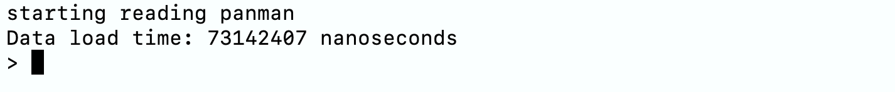

Welcome to PanMAN Wiki
Introduction
What are PanMANs?
PanMAN or Pangenome Mutation-Annotated Network is a novel data representation for pangenomes that provides massive leaps in both representative power and storage efficiency. Specifically, PanMANs are composed of mutation-annotated trees, called PanMATs, which, in addition to substitutions, also annotate inferred indels (Fig. 2b), and even structural mutations (Fig. 2a) on the different branches. Multiple PanMATs are connected in the form of a network using edges to generate a PanMAN (Fig. 2c). PanMAN's representative power is compared against existing pangenomic formats in Fig. 1. PanMANs are the most compressible pangenomic format for the different microbial datasets (SARS-CoV-2, RSV, HIV, Mycobacterium. Tuberculosis, E. Coli, and Klebsiella pneumoniae), providing 2.9 to 559-fold compression over standard pangenomic formats.

Figure 1: Comparison of representative power of PanMAN against other pangenomic formats (yellow ticks indicate partial representative ability)

Figure 2: Overview of the PanMAN data structure
PanMAN's Protocol Buffer file format
PanMAN utilizes Google’s protocol buffer (protobuf, https://protobuf.dev/), a binary serialization file format, to compactly store PanMAN's data structure in a file. Fig. 3 provides the .proto file defining the PanMAN’s structure. At the top level, the file format of PanMANs encodes a list (declared as a repeated identifier in the .protof file) of PanMATs. Each PanMAT object stores the following data elements: (a) a unique identifier, (b) a phylogenetic tree stored as a string in Newick format, (c) a list of mutations on each branch ordered according to the pre-order traversal of the tree topology, (d) a block mapping object to record homologous segments identified as duplications and rearrangements, which are mapped against their common consensus sequence; the block-mapping object is also used to derive the pseudo-root, e) a gap list to store the position and length of gaps corresponding to each block's consensus sequence. Each mutation object encodes the node's block and nucleotide mutations that are inferred on the branches leading to that node. If a block mutation exists at a position described by the Block-ID field (int32), the block mutation field (bool) is set to 1, otherwise set to 0, and its type is stored as a substitution to and from a gap in Block mutation type field (bool), encoded as 0 or 1, respectively. In PanMAN, each nucleotide mutation within a block inferred on a branch has four pieces of information, i.e., position (middle coordinate), gap position (last coordinate), mutation type, and mutated characters. To reduce redundancy in the file, consecutive mutations of the same type are packed together and stored as a mutation info (int32) field, where mutation type, mutation length, and mutated characters use 3, 5, and 24 bits, respectively. PanMAN stores each character using one-hot encoding, hence, one "Nucleotide Mutations" object can store up to 6 consecutive mutations of the same type. PanMAN's file also stores the complex mutation object to encode the type of complex mutation and its metadata such as PanMATs' and nodes' identifiers, breakpoint coordinates, etc. The entire file is then compressed using XZ (https://github.com/tukaani-project/xz) to enhance storage efficiency.

Figure 3: PanMAN's file format
panmanUtils
panmanUtils includes multiple algorithms to construct PanMANs and to support various functionalities to modify and extract useful information from PanMANs (Fig. 4).

Figure 4: Overview of panmanUtils' functionalities
Video Tutorial
panmanUtils Installation Methods
Using installation script (requires sudo access)
-
Dependencies i. Git
-
Clone the repository
- Run the installation script
- Run panmanUtils
Note
panmanUtils is built using CMake and depends upon libraries such as Boost, cap'n proto, etc, which are also installed in installationUbuntu.sh. If users face version issues, try using the docker methods detailed below.
Using Docker Image
To use panmanUtils in a docker container, users can create a docker container from a docker image, by following these steps
- Dependencies i. Docker
- Pull the PanMAN docker image from DockerHub
- Build and run the docker container
- Run panmanUtils
Note
The docker image comes with preinstalled panmanUtils and other tools such as PanGraph, PGGB, and RIVET.
Using DockerFile
Docker container with preinstalled panmanUtils can also be built from DockerFile by following these steps
- Dependencies i. Docker ii. Git
- Clone the repository
- Build a docker image
- Build and run docker container
- Run panmanUtils
PanMAN Construction
Here, we will learn to build PanMAN from various input formats.
Step 0: The Steps below require panmanUtils, if not done so far, refer to installation guide to install panmanUtils. To check if panmanUtils is properly installed or not, run the following command, and it should execute without error
# enter into the panman directory (assuming $PANMAN directs to the panman repository directory)
cd $PANMAN_HOME
Building PanMAN from Alignments (PanGraph/GFA/MSA)
Building PanMAN from PanGraph
Step 1: Check if sars_20.json and sars_20.nwk files exist in test directory. Alternatively, users can provide custom PanGraph (JSON) and tree topology (Newick format) files to build a panman.
Step 2: Run panmanUtils with the following command to build a panman from PanGraph:
cd $PANMAN_HOME/build
./panmanUtils -P $PANMAN_HOME/test/sars_20.json -N $PANMAN_HOME/test/sars_20.nwk -O sars_20
sars_20.panman in $PANMAN_HOME/build/panman directory.
Building PanMAN from GFA
Step 1: Check if sars_20.gfa and sars_20.nwk files exist in test directory. Alternatively, users can provide custom GFA and tree topology (Newick format) files to build a panman.
Step 2: Run panmanUtils with the following command to build a panman from GFA:
cd $PANMAN_HOME/build
./panmanUtils -G $PANMAN_HOME/test/sars_20.gfa -N $PANMAN_HOME/test/sars_20.nwk -O sars_20
sars_20.panman in $PANMAN_HOME/build/panman directory.
Building PanMAN from MSA (FASTA format)
Step 1: Check if sars_20.msa and sars_20.nwk files exist in test directory. Alternatively, users can provide custom MSA (FASTA format) and tree topology (Newick format) files to build a panman.
Step 2: Run panmanUtils to build a panman from GFA using the following commands:
cd $PANMAN_HOME/build
./panmanUtils -M $PANMAN_HOME/test/sars_20.msa -N $PANMAN_HOME/test/sars_20.nwk -O sars_20
sars_20.panman in $PANMAN_HOME/build/panman directory.
Building PanMAN from raw genome sequences or fragment assemblies using Snakemake Workflow
We provide a Snakemake workflow to construct PanMANs from raw sequences (FASTA format) or from fragment assemblies.
Note
The Snakemake workflow uses various tools such as PanGraph tool, PGGB, MAFFT, and MashTree to build input PanGraph, GFA, MSA, and Tree topology files, respectively and it is particularly designed to be used in the docker container build from either the provided docker image or the DockerFile (instructions provided here).
Building PanMAN from raw genome sequences
Step 1: Run the following command to construct a panman from raw sequences.
cd $PANMAN_HOME/workflows
conda activate snakemake
snakemake --use-conda --cores 8 --config RUNTYPE="pangraph/gfa/msa" FASTA="[user_input]" SEQ_COUNT="Number of sequences" ASSEM="NONE" REF="NONE" TARGET="NONE"
Building PanMAN from fragment assemblies
Step 1: Run the following command to construct a panman from fragment assemblies.
cd $PANMAN_HOME/workflows
conda activate snakemake
snakemake --use-conda --cores 8 --config RUNTYPE="pangraph/gfa/msa" FASTA="None" SEQ_COUNT="Number of sequences" ASSEM="frag" REF="reference_file" TARGET="target.txt"
Exploring utilities in panmanUtils
Here, we will learn to use various functionalities provided in panmanUtils software for downstream applications in epidemiological, microbiological, metagenomic, ecological, and evolutionary studies.
Step 0: The Steps below require panmanUtils and a PanMAN. We provide a pre-built panman (sars_20.panman), otherwise, refer to installation guide to install panmanUtils and construction instructions to build a PanMAN.
Functionalities in panmanUtils
All panmanUtils functionality commands manipulate the input PanMAN file.
| Option | Description |
|---|---|
-I, --input-panman |
Input PanMAN file path |
-s, --summary |
Print PanMAN summary |
-t, --newick |
Print Newick string of all trees in a PanMAN |
-f, --fasta |
Print tip/internal sequences (FASTA format) |
-m, --fasta-aligned |
Print MSA of sequences for each PanMAT in a PanMAN (FASTA format) |
-b, --subnet |
Extract subnet of given PanMAN to a new PanMAN file based on the list of nodes provided in the input file |
-v, --vcf |
Print variations of all sequences from any PanMAT in a PanMAN (VCF format) |
-g, --gfa |
Convert any PanMAT in a PanMAN to a GFA file |
-w, --maf |
Print m-WGA for each PanMAT in a PanMAN (MAF format) |
-a, --annotate |
Annotate nodes of the input PanMAN based on the list provided in the input file |
-r, --reroot |
Reroot a PanMAT in a PanMAN based on the input sequence id (--reference) |
-v, --aa-translation |
Extract amino acid translations in tsv file |
-e, --extended-newick |
Print PanMAN's network in extended-newick format |
-k, --create-network |
Create PanMAN with network of trees from single or multiple PanMAN files |
-p, --printMutations |
Create PanMAN with network of trees from single or multiple PanMAN files |
-q, --acr |
ACR method [fitch(default), mppa] |
-n, --reference |
Identifier of reference sequence for PanMAN construction (optional), VCF extract (required), or reroot (required) |
-s, --start |
Start coordinate of protein translation |
-e, --end |
End coordinate of protein translation |
-d, --treeID |
Tree ID, required for --vcf |
-i, --input-file |
Path to the input file, required for --subnet, --annotate, and --create-network |
-o, --output-file |
Prefix of the output file name |
Important: When output-file argument is optional and is not provided to panmanUtils, the output will be printed in the terminal.
Note
For all the examples below, sars_20.panman will be used as input panman. Alternatively, users can provide custom build panman using the instructions provided here.
Summary extract
The summary feature extracts node and tree level statistics of a PanMAN, that contains a summary of its geometric and parsimony information.
- Usage Syntax
- Example
Newick extract
Extract Newick string of all trees in a PanMAN.
- Usage syntax
- Example
Extended Newick extract
Extract network in Extended Newick format.
- Usage syntax
- Example
Tip/internal node sequences extract
Extract tip and internal node sequences from a PanMAN in a FASTA format.
- Usage syntax
- Example
Multiple Sequence Alignment (MSA) extract
Extract MSA of sequences for each PanMAT (with pseudo-root coordinates) in a PanMAN in a FASTA format.
- Usage syntax
- Example
Multiple Whole Genome Alignment (m-WGA) extract
Extract m-WGA for each PanMAT in a PanMAN in the form of a UCSC multiple alignment format (MAF).
- Usage syntax
- Example
Variant Call Format (VCF) extract
Extract variations of all sequences from any PanMAT in a PanMAN in the form of a VCF file with respect to any reference sequence (ref) in the PanMAT.
- Usage syntax
- Example
Graphical fragment assembly (GFA) extract
Convert any PanMAT in a PanMAN to a Graphical fragment assembly (GFA) file representing the pangenome.
- Usage syntax
- Example
Subnetwork extract
Extract a subnetwork from a given PanMAN and write it to a new PanMAN file based on the list of nodes provided in the input-file.
- Usage syntax
- Example
Annotate
Annotate nodes in a PanMAN with a custom string, later searched by these annotations, using an input TSV file containing a list of nodes and their corresponding custom annotations.
- Usage syntax
- Example
cd $PANMAN_HOME/build ./panmanUtils -I panman/sars_20.panman --annotate --input-file=annotations.tsv --output-file=sars_20_annotateNOTE: If output-file is not provided to panmanUtils, the annotated PanMAN will be written to the same file.
Amino Acid Translation
Extract amino acid translations from a PanMAN in TSV file.
- Usage syntax
- Example
Range Query
panmanUtils allow extracting alignment of all the sequences of a single PanMAT in a PanMAN (FASTA format) with respect to a user-defined reference sequence between positions [start:end]
- Usage syntax
- Example
panmanUtils Interactive mode
Step 1: Users can enter panmanUtils's interactive mode by passing input panman as input using the following command:
Note
The interactive mode should look like the image attached below

Step 2: Use the commands listed in Table 1 to perform desired operation
Contributions
We welcome contributions from the community to enhance the capabilities of PanMAN and panmanUtils. If you encounter any issues or have suggestions for improvement, please open an issue on PanMAN GitHub page. For general inquiries and support, reach out to our team.
Citing PanMAN
If you use the PanMANs or panmanUtils in your research or publications, we kindly request that you cite the following paper:
* Sumit Walia, Harsh Motwani, Kyle Smith, Russell Corbett-Detig, Yatish Turakhia, "Compressive Pangenomics Using Mutation-Annotated Networks", bioRxiv 2024.07.02.601807; doi: 10.1101/2024.07.02.601807